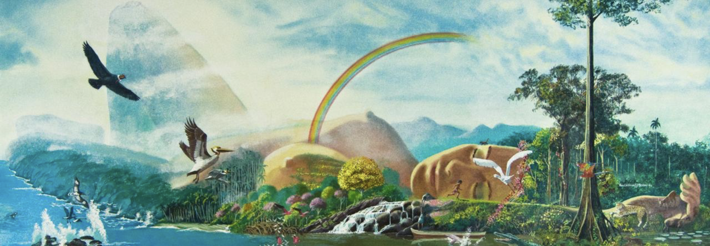

"RenaSer es pionera en educación ambiental y concientización de la biodiversidad en Colombia"
La Fundación Recursos Naturales, RenaSer, nace en 1982 con el objetivo de promover la integración armónica del ser humano con el medio ambiente. Desde sus inicios, su propósito ha sido contribuir activamente a la preservación, recuperación y uso racional de los recursos naturales, mediante acciones educativas en diversos formatos, investigaciones aplicadas y la constante divulgación de conocimientos ambientales.
A lo largo de más de cuatro décadas, RenaSer ha desarrollado múltiples proyectos significativos como los álbumes “Nuestra Fauna”, “El Encanto de las Mariposas de Colombia”, y el álbum-libro “Los Defensores del Arcoíris”. Estas publicaciones han fortalecido la educación ambiental en Colombia y han sido herramientas valiosas para acercar a la población al conocimiento de su biodiversidad. Además, la Fundación ha impulsado el Plan GEA (Global de Educación Ambiental), que fomenta una pedagogía participativa e incluyente, integrando valores ambientales en comunidades educativas y procesos sociales.
En la actualidad, RenaSer dirige sus esfuerzos hacia la restauración de suelos, un pilar fundamental para la recuperación ambiental y el sostenimiento de ecosistemas saludables. Este enfoque busca rescatar tierras degradadas a través de prácticas agroecológicas, reforestación, educación campesina y conservación de saberes ancestrales. La restauración del suelo no solo representa una solución ecológica, sino también una oportunidad para fortalecer la seguridad alimentaria, el arraigo territorial y la resiliencia frente al cambio climático en comunidades vulnerables.
Con el Embajador de Estados Unidos , no pude encontrar su nombre, en nuestra casa de Bogota, para conocer de primera mano lo que los Estados Unidos estaba trabajando en Medio Ambiente en ese momento en su país!. Nos motivó también a crear la Fundación con muy buena información.
Con el Presidente Julio César Turbay Ayala en 1982, sembrando un Liquidambar, el día de inauguración de la sede de la Fundación RenaSer en la Cll.37# 22-61
Con el Expresidente Misael Pastrana Borrero, motivador y promotor de la Fundación Renaser, uno de los visionarios de la importancia de la conservación del medio ambiente, lo mismo que el empresario Julio Mario Santodomimgo promotor y financiador de los proyectos de Renaser y Alvaro Gómez Hurtado compartiendo el día que fue otorgado el premio al medio ambiente a la Fundación Renaser, por el éxito en el programa educativo con el álbum Nuestra Fauna vertebrados que llegó a más de 1.000.000 de niños en Colombia.
Contribuimos con la preservación, recuperación y uso racional de los recursos naturales.
Desarrollamos acciones educativas en todas sus formas para promover la conciencia ambiental.
Mejoramos la información y divulgación de todos los aspectos relacionados con el medio ambiente.
Realizamos estudios y proyectos relacionados con la temática ambiental y socioeconómica.
Desarrollamos una ética hacia la naturaleza que conlleve cambios de comportamiento para una mejor calidad de vida.
A través de libros y álbumes educativos, RenaSer ha ayudado a miles de colombianos a descubrir y valorar la biodiversidad del país.
Álbum ilustrado que invita a conocer las especies más emblemáticas de Colombia.
Una colección visual para descubrir la belleza y diversidad de las mariposas colombianas.
Álbum-libro que narra la historia de jóvenes protectores del medio ambiente.
Guía educativa sobre estrategias de conservación para salvar especies amenazadas.
Creemos en un futuro donde las comunidades vivan en equilibrio con su entorno natural, aprovechando los recursos de manera responsable y preservándolos para las generaciones futuras.

Tengo 40 años de experiencia trabajando en la conservación de los recursos naturales y el ambiente, desde la creación de la Fundación RENASER en 1982. Somos pioneros en educación ambiental, creando para los jóvenes materiales de educación no formal, más de un millón de álbumes vendidos por temáticas como: Nuestra Fauna de Colombia (mamíferos, reptiles, aves y peces); El encanto de las Mariposas de Colombia, premiados por el sector privado, y un álbum cuento “Los Defensores del Arcoíris”, un recorrido por los diferentes ecosistemas de los parques naturales del país. Todos ellos fueron dibujados por expertos dibujantes y diseñadores gráficos con ecosistemas maravillosamente ilustrados con las especies de flora, fauna y la cultura de cada región. Este proyecto fue declarado por el gobierno de España y el Instituto de Medio Ambiente ICONA como modelo educativo mundial, y por tal motivo la Fundación RenaSer fue elegida entre varias fundaciones de Suramérica como invitada de honor a la feria de Sevilla en 1992.
Durante más de 12 años trabajamos con el Zoológico de San Diego, California, y el Inderena, desde 1989 en la conservación del Cóndor Andino, una de las aves más grandes del mundo. En el año 2001 escribimos con mi esposo un libro sobre el objeto de creación de la Fundación, “La Tierra Cambia de Piel”, dando una nueva visión de la calidad de vida, presentando los componentes de la calidad de vida, la importancia de la educación ambiental y una fórmula econométrica que sirve para medir y comparar la calidad de vida de Colombia en relación con el mundo.
Igualmente, desde la Fundación se recopiló el trabajo de más de 12 años de investigación y conservación al reintroducir desde el Zoológico de San Diego, polluelos nacidos de ejemplares del Cóndor Andino de Los Andes, y se editó el libro “Cóndor Andino: Cómo salvar una especie en vía de extinción”.
Actualmente, la Fundación está dedicada a la restauración de los ecosistemas del Páramo y la regeneración de los suelos de la región, educando a los jóvenes en la construcción de huertas orgánicas, regeneración y recuperación de los suelos, en un trabajo con la comunidad que permita mejorar la calidad de vida de la población en su nivel de vida, condiciones, medios de vida y relaciones consigo mismos y con los demás.
En RenaSer creemos que un cambio real comienza con la educación y el compromiso colectivo con el medio ambiente. Durante más de 40 años, hemos sembrado conocimiento, impulsado proyectos de conservación y empoderado comunidades para proteger la biodiversidad de nuestro país.
Tu donación nos permite seguir creando materiales educativos, capacitando líderes ambientales, restaurando suelos degradados y acompañando procesos comunitarios en las regiones más afectadas por la pérdida ambiental. Cada aporte, por pequeño que parezca, se transforma en oportunidades para cuidar la vida.
Puedes hacer tu contribución de manera sencilla, escaneando el código QR con tu aplicación Nequi. Esta donación llega directamente a nuestra Fundación y es utilizada en proyectos reales de impacto social y ecológico.
¡Gracias por sumarte! Con tu ayuda, juntos construimos un futuro más verde, justo y consciente.